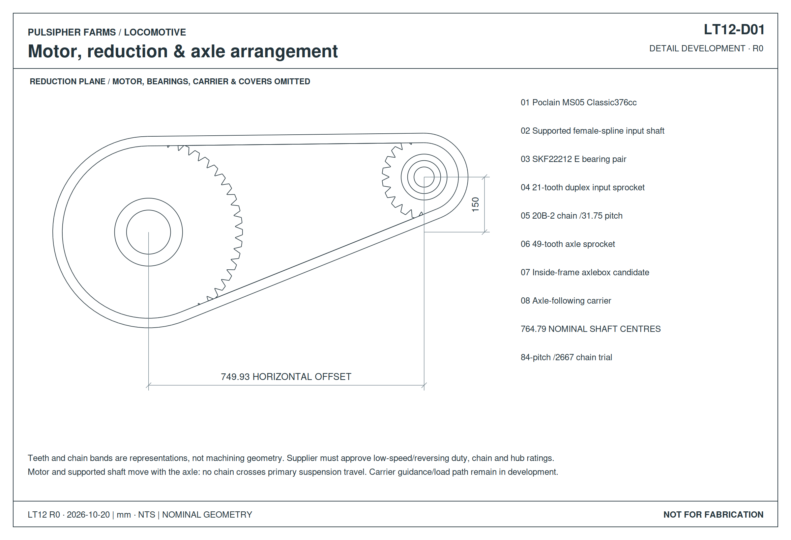
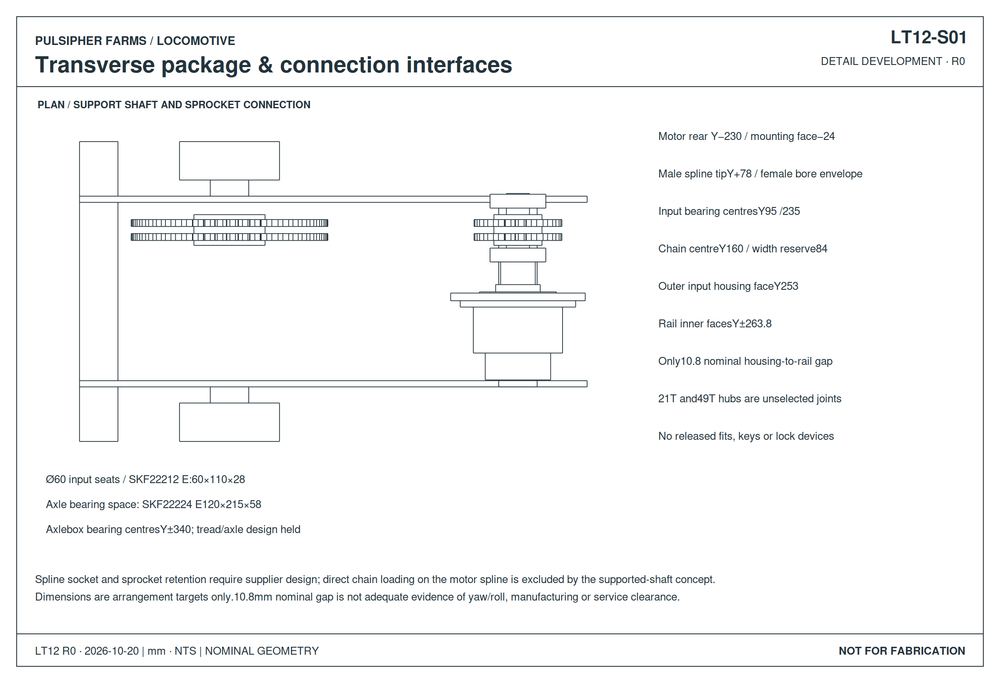
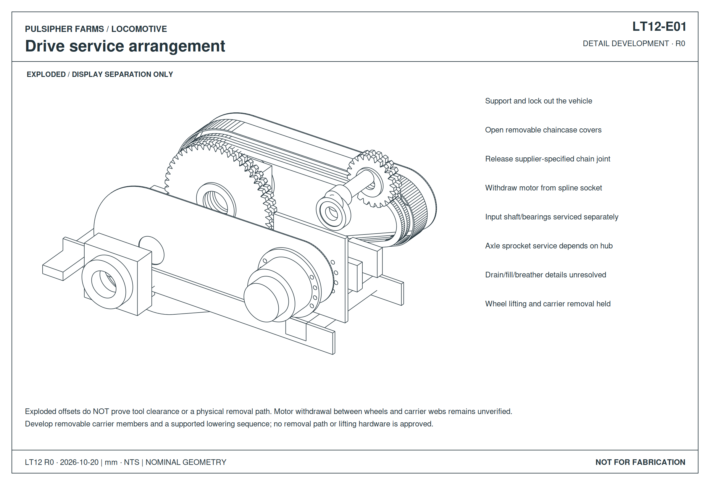

This retained design record predates LT16. Open the current whole locomotive and curve views · Current suspension drawings.
LT13 CURVE CHECK · 50/30 m curve placements reveal guide, body and frame clashes. Open the drawings and highlighted CAD. Neither radius is approved.
LOCOMOTIVE / LT12
Inboard axle drive
Three hydraulic motors · Enclosed 2.33:1 reduction · Lower frame retained
Drive arrangement & connections
CAD projections · Nominal mm



376 cc Poclain motor candidates; 21/49-tooth duplex-chain reduction. Bearing-supported input shafts keep chain pull off the motor splines. Springs, guide attachments and service removal remain in development.
Drive CAD
Loading…Select a part to inspect it; hide the Guard group to expose the reduction. The exterior tab retains LT11’s static appearance rods. They are omitted from the mechanical drive views because the working linkage is unresolved. No animation or model view is an operating validation.